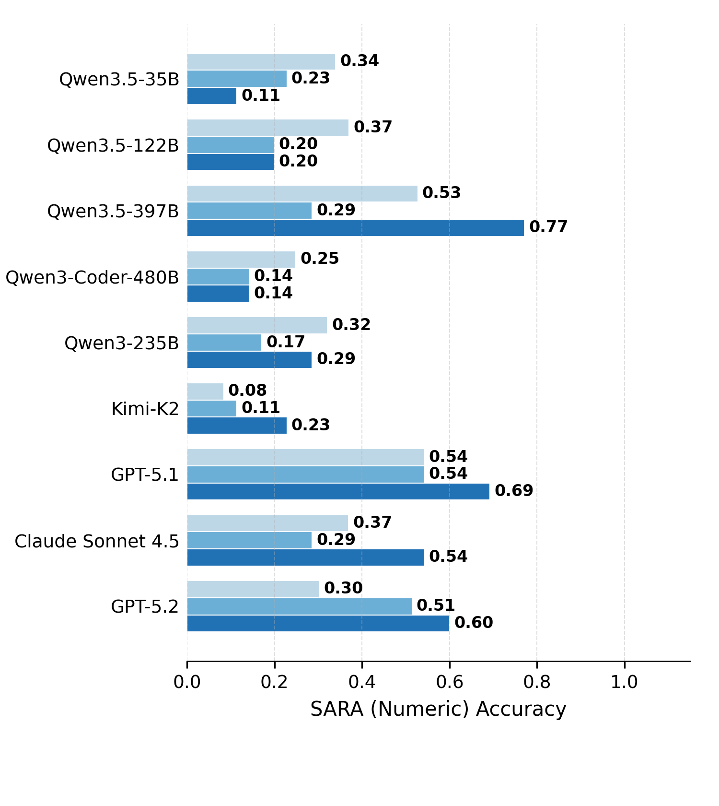
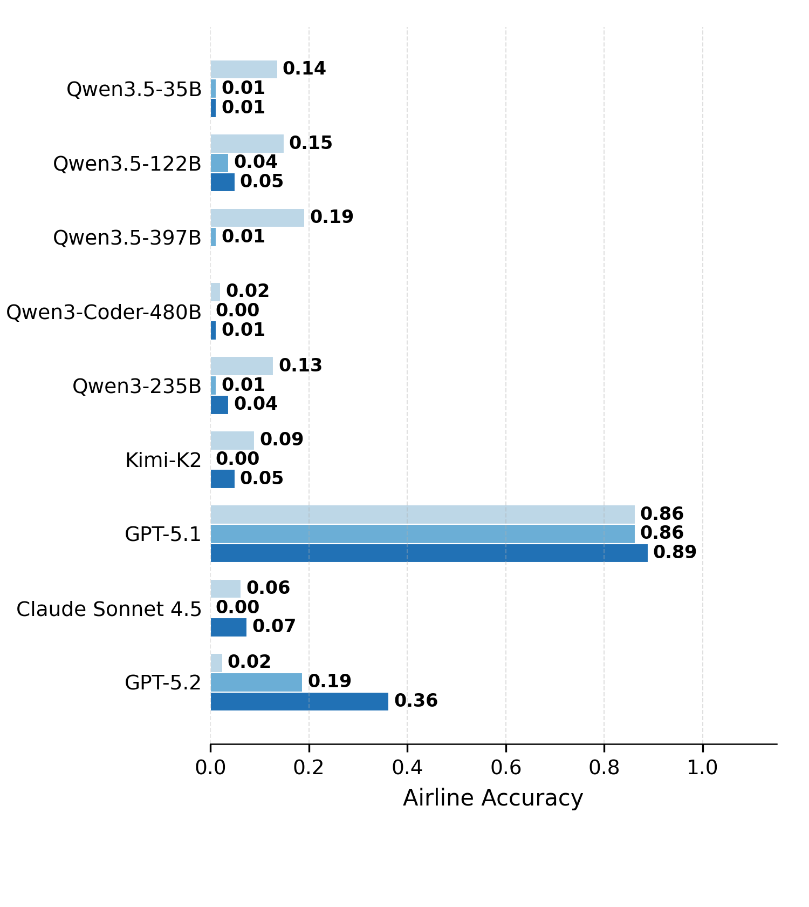
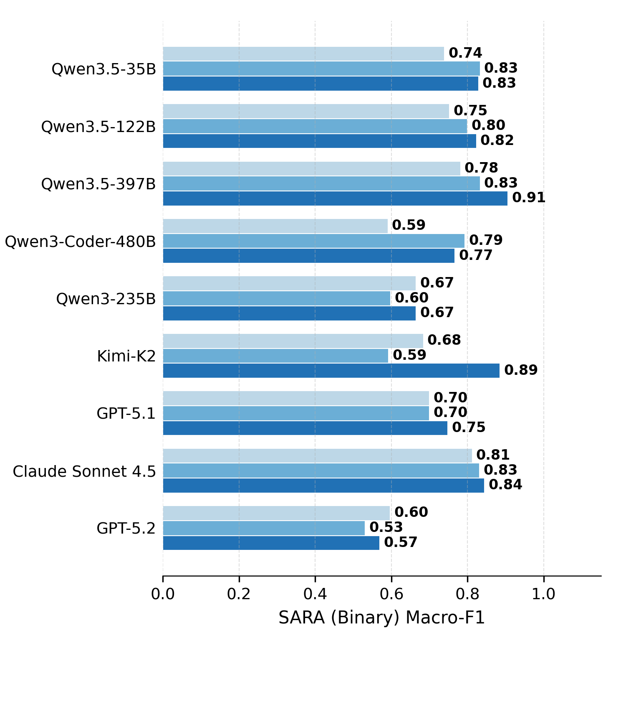
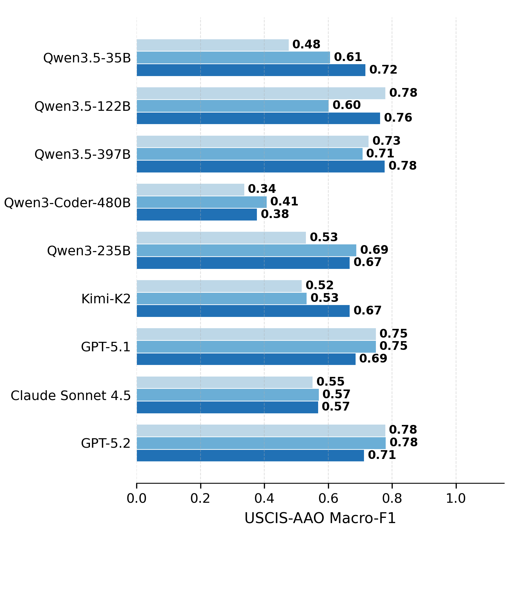
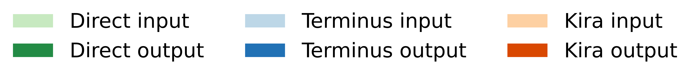
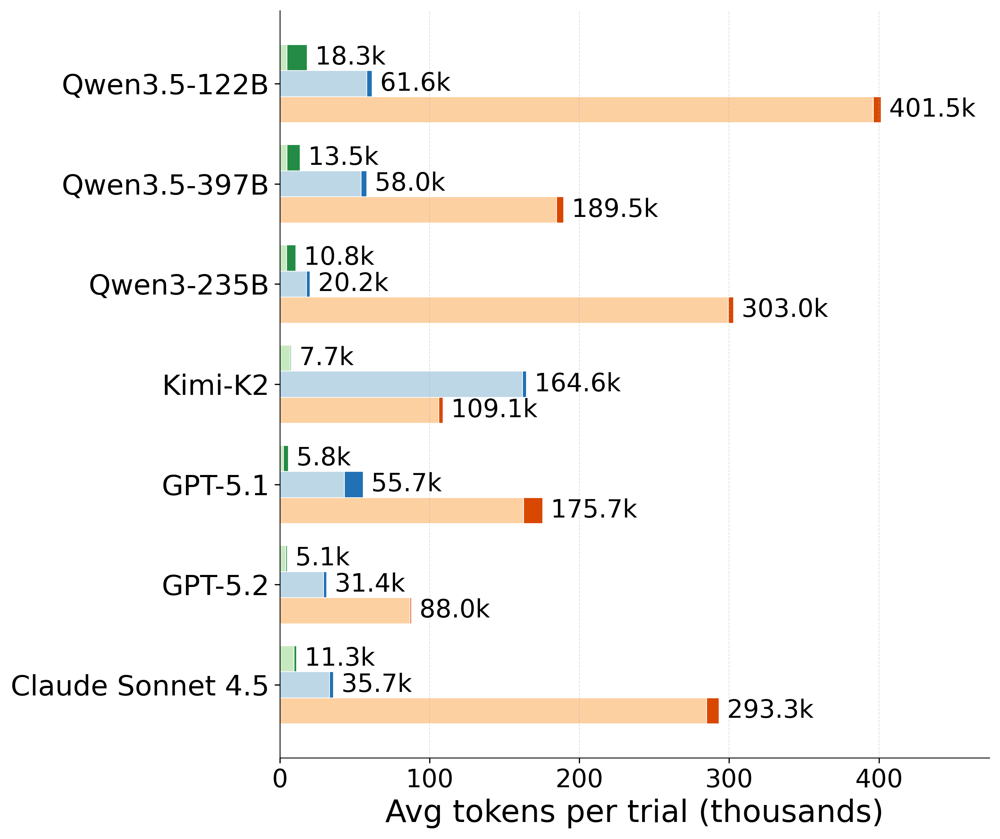

DAR
Deontic Reasoning with Agentic Harnesses
1Johns Hopkins University · 2Télécom Paris, Institut Polytechnique de Paris
Data is available on Hugging Face as part of DeonticBench.
Deontic Reasoning with Agentic Harnesses
1Johns Hopkins University · 2Télécom Paris, Institut Polytechnique de Paris
Data is available on Hugging Face as part of DeonticBench.
Deontic reasoning is the task of answering questions by applying explicit rules and policies to case-specific facts — for example, computing tax liability under a statute or determining the outcome of an immigration appeal. A key technical challenge for LLM-based deontic reasoning is that the relevant ruleset can be long and cross-referenced, so models may still fail to locate the rules needed for a particular reasoning step. We introduce Deontic Agentic Reasoning (DAR), an agentic reasoning setup in which the model interacts with the statutes on demand. We evaluate DAR under multiple harnesses on the hard subsets of DeonticBench. Across these settings, we find that agentic harnesses can push the frontier on deontic reasoning tasks, but improvements are not uniform: weaker models often degrade on numerical tasks while consuming far more tokens.
Frontier (GPT-5.1, GPT-5.2, Claude Sonnet 4.5) and open-source (Qwen3.5 family, Qwen3-Coder, Qwen3-235B, Kimi K2).
Terminus-2 and Terminus-KIRA in the main study; Claude Code and Codex CLI in the appendix — all vs. direct solving.
Frontier models improve on SARA-Numeric under Terminus-KIRA, while weaker models drop 11–23% and burn up to 4× the tokens.
The model receives the full statute, the case facts, and the question in a single prompt and produces an answer in one pass — the configuration used in most prior deontic-reasoning evaluations.
The statute is placed as a file (statute.txt) in a harness. The model receives only the case facts and question, then issues tool calls (sed, grep, cat, Python) to read targeted portions of the statute on demand, accumulating observations as it explores.
Under Terminus-KIRA, GPT-5.2 climbs from 30% → 60% on SARA-Numeric, Claude Sonnet 4.5 from 36% → 54%, and GPT-5.1 picks up another 15 points while staying saturated near 0.86 on Airline. The harness turns latent statute-reading ability into delivered accuracy.
The same scaffold hurts weaker models. On SARA-Numeric, Qwen3.5-35B drops 34% → 11% and Qwen3.5-122B 37% → 20%. On Airline, every open-source model collapses to near-zero once placed in Terminus-2 or KIRA.
Under Terminus-2, Qwen3.5-122B averages 401k tokens per trial and Qwen3-235B 303k — roughly 4× what frontier models consume. Extra turns inflate already-shaky reasoning into longer, more confident wrong answers.
For capable models the harness enables self-directed retrieval and error recovery, as the Mismanaged Geniuses Hypothesis predicts. For weaker models it is a confidence amplifier: interactive access with tools, but not the judgment to use them well.




Figure 2. Direct Solving vs. Terminus-2 vs. Terminus-KIRA across nine models on the four hard DeonticBench tasks. Each task is allotted a 10-minute budget; trials that exceed the budget, fail to parse, or raise harness runtime errors are counted as incorrect. Agentic harnesses lift frontier models but degrade open-source models, most severely on the numerical tasks.


Figure 3. Average tokens consumed per trial under Direct Solving, Terminus-2, and Terminus-KIRA. Agentic harnesses append each action's output to the next iteration's input, so weaker open-source models spend far more tokens — up to roughly 4× the frontier — without a matching accuracy gain.
| Accuracy | Macro F1 | ||||
|---|---|---|---|---|---|
| Model | Harness | SARA-Num | Airline | SARA-Bin | USCIS-AAO |
| Qwen3-Coder-480B | direct | 0.249 | 0.021 | 0.591 | 0.338 |
| codex | 0.086 | 0.000 | 0.598 | 0.427 | |
| terminus-2 | 0.143 | 0.000 | 0.793 | 0.408 | |
| terminus-kira | 0.143 | 0.013 | 0.766 | 0.378 | |
| claude-code | 0.343 | 0.050 | 0.800 | 0.505 | |
| Qwen3.5-122B | direct | 0.370 | 0.150 | 0.753 | 0.780 |
| codex | 0.229 | 0.013 | 0.799 | 0.775 | |
| terminus-2 | 0.200 | 0.038 | 0.800 | 0.603 | |
| terminus-kira | 0.200 | 0.050 | 0.823 | 0.764 | |
| claude-code | 0.286 | 0.113 | 0.793 | 0.730 | |
| Qwen3.5-35B | direct | 0.340 | 0.137 | 0.740 | 0.477 |
| terminus-2 | 0.229 | 0.013 | 0.833 | 0.607 | |
| terminus-kira | 0.114 | 0.013 | 0.829 | 0.718 | |
| claude-code | 0.371 | 0.088 | 0.833 | 0.603 | |
| Qwen3.5-397B | direct | 0.528 | 0.192 | 0.782 | 0.727 |
| terminus-2 | 0.286 | 0.013 | 0.833 | 0.708 | |
| terminus-kira | 0.771 | 0.000 | 0.906 | 0.778 | |
| claude-code | 0.514 | 0.100 | 0.889 | 0.643 | |
| Qwen3-235B | direct | 0.321 | 0.128 | 0.665 | 0.531 |
| codex | 0.114 | 0.000 | 0.721 | 0.509 | |
| terminus-2 | 0.171 | 0.013 | 0.598 | 0.689 | |
| terminus-kira | 0.286 | 0.038 | 0.665 | 0.668 | |
| Kimi-K2 | direct | 0.084 | 0.090 | 0.684 | 0.518 |
| codex | 0.200 | 0.000 | 0.733 | 0.553 | |
| terminus-2 | 0.114 | 0.000 | 0.593 | 0.533 | |
| terminus-kira | 0.229 | 0.050 | 0.885 | 0.668 | |
| GPT-5.2 | direct | 0.303 | 0.025 | 0.597 | 0.779 |
| codex | 0.343 | 0.000 | 0.464 | 0.819 | |
| terminus-2 | 0.514 | 0.188 | 0.531 | 0.781 | |
| terminus-kira | 0.600 | 0.363 | 0.569 | 0.713 | |
Codex CLI, Terminus-2, Terminus-KIRA, and Claude Code harnesses on DeonticBench (Appendix Table 1). Accuracy columns report exact-match accuracy; Macro F1 columns report macro-averaged F1. The best score per (model, metric) row group is bolded.